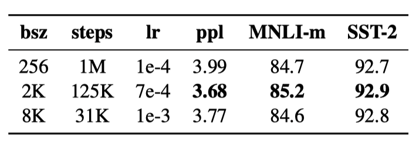
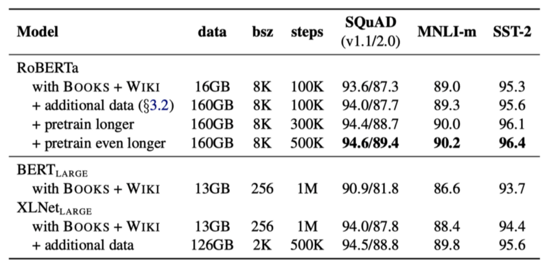

RoBERTa — Robustly optimized BERT approach
Better than XLNet without Architectural Changes to the Original BERT

RoBERTa’s base is BERT. So, let’s quickly review the history before explaining what RoBERTa is all about.
In 2018, Jacob Devlin et al. (Google AI Language) released BERT, which achieved state-of-the-art results on nine NLP tasks, inspiring other researchers to develop further improvements. Soon, newer models superseded the original BERT models. At least, that was how it looked.
One example was XLNet by Zhilin Yang et al. (Google AI Brain and Carnegie Mellon University). They incorporated architectural and training changes into BERT to produce XLNet outperforming BERT on 20 tasks, which was an outstanding achievement. However, it was unclear what changes made XLNet improve so much. Were the architectural changes the primary source for the performance jump, or did the updated training significantly contribute more?
Moreover, there was a question of whether Jacob Devlin et al. optimally trained the original BERT. It could be that other researchers happened to train their model with better hyperparameters.
Those questions needed some answers, but it wasn’t easy to pinpoint what caused performance improvement when model training involved many factors like architectural decisions, hyperparameter choices, and private data sources. It required a systematic approach to examine the impact of each factor one at a time.
As we will see, there were exciting discoveries that led to the birth of RoBERTa, which this article discusses with the following topics:
- What is RoBERTa?
- Dynamic MLN masks
- No NSP objective
- Larger, Bigger, Longer, and Better
1 What is RoBERTa?
Yinhan Liu et al. (Facebook AI and the University of Washington) conducted a replication study of BERT, studying the impact of critical hyperparameters and training details such as loss objectives and data sizes.
They dissected the pre-training step, the most crucial part of the BERT framework involving self-supervised learning with many unlabeled text data, to determine what caused the performance improvements in post-BERT models.
As a result, they found BERT significantly undertrained.
In other words, Yinhan Liu et al. discovered that other models like XLNet outperformed BERT because the training of original BERT models was not optimal.
So, they came up with an improved recipe for training BERT models. They called it RoBERTa, which stands for a Robustly optimized BERT approach, and published a paper about a month after the XLNet paper came out.
RoBERTa could match or exceed the performance of all post-BERT models (July 2019) by changing how to train BERT models without altering the architecture. So, other models’ improvements may not be just because of the architectural updates. In the words of the RoBERTa paper:
These results highlight the importance of previously overlooked design choices, and raise questions about the source of recently reported improvements. RoBERTa: A Robustly Optimized BERT Pretraining Approach
The following sections discuss the changes to the original BERT pre-training to improve the model performance.
2 Dynamic MLN Masks
Masked Langauge Modeling (MLN) requires a model to predict randomly masked tokens so that the model learns to extract context from the surrounding tokens. It is a great way to train a language model, but there was a problem with how Jacob Devlin et al. applied the masking.
The original BERT implementation used static masking during the preprocessing of training data. They duplicated the training data ten times and masked each sequence at ten different positions. So, each sequence had ten randomly masked variations. However, they used that over the 40 training epochs, meaning the model saw each sequence with the same mask four times during training.
But why is that a problem?
As we will see later, RoBERTa advocates more extended training (i.e., more epochs), which means the model would see the same masks more times and potentially overfit the training dataset. One way to overcome it would be to add more duplicated training data with random masks. However, that workaround would cause another problem because RoBERTa proposed using larger datasets. It would be very costly to duplicate them many times in terms of time and space.
So, Yinhan Liu et al. used dynamic masking to generate random masks every time feeding sequences to the model. They compared the static and dynamic masking strategies on the same BERT model and empirically proved that the dynamic masking performed comparably or slightly better. They adopted dynamic masking for the remaining experiments, which was efficient and crucial when training with more steps or larger datasets.
3 No NSP Objective
NSP (Next Sentence Prediction) makes a model learn the relationship between two sentences by predicting if two sentences A and B are contiguous in the same document. In other words, the model should predict true if sentence B is the actual next sentence of sentence A. The BERT paper demonstrated that NSP benefits question answering (QA) and natural language inference (NLI) tasks. However, researchers were questioning the necessity of the NSP loss even before RoBERTa. For example, the XLNet paper asserted that NSP did not show consistent improvement, and they did not use NSP when training XLNet-Large.
Again, Yinhan Liu et al. did comprehensive experiments to understand the practicality of NSP using alternative input formats. First, they compared the following two input formats with NSP loss:
- Segment-pair with NSP
- Sentence-pair with NSP
A segment can contain multiple sentences (i.e., a paragraph) as per the original BERT pre-training. They found that segment-pair with NSP loss performed better, and sentence-pair with NSP loss hurt performance on downstream tasks. They hypothesized that two single sentences are insufficient for the model to learn long-range dependencies. If NSP improves the downstream task performance only with segment pairs, why did the original BERT claim that removing NSP degrades the performance? The RoBERTa paper says the following:
It is possible that the original BERT implementation may only have removed the loss term while still retaining the SEGMENT- PAIR input format. RoBERTa: A Robustly Optimized BERT Pretraining Approach
As such, it became unclear if NSP generally improved the BERT downstream tasks. So, they did more experiments using only the MLM objective, and found the removal of the NSP objective improved the performance:
We find that this setting outperforms the originally published BERT BASE results and that removing the NSP loss matches or slightly improves downstream task performance RoBERTa: A Robustly Optimized BERT Pretraining Approach
They tried the two variations of inputs only without NSP (using only consecutive sentences):
- Full-sentences without NSP
- Doc-sentences without NSP
The reason why they compared these two is that full-sentences are easier to handle than doc-sentences.
Full-sentence sampling ensures the total length is 512 tokens, for which it may cross a document boundary (i.e., it may sample from more than one document). Doc-sentences samples sentences from only one document. As such, sampled inputs from near the end of a document may be shorter than 512 tokens, increasing the batch size to have a similar number of total tokens in a batch. Doc-sentences are a bit more involved, but it performed slightly better than the full-sentences method. However, they went with full-sentences as comparing results with other works is easier.
All in all, RoBERTa does not include the Next Sentence Prediction (NSP) objective.
4 Larger, Bigger, Longer, and Better
In the RoBERTa paper, they reported other changes in training that affect performance. For example, they checked the effect of training with very large mini-batches. The original BERT (base) used 1M steps with a batch size of 256 sequences. If we use 2K sequences, it will be 125K steps. If we use 8K sequences, it will be 31K steps. The following shows the results with different batch sizes:

Note: “ppl” stands for “perplexity”, and the lower, the better (more confident).
The performance is better when trained with a larger batch size than the original BERT training. XLNet also used an eight-times larger batch size than the original BERT.
Another aspect is to use more data. XLNet used ten times more data than the original BERT. So, Yinhan Liu et al. trained BERT with the larger dataset. They also trained the model longer (with more steps).

In conclusion, the original BERT without NSP trained with larger batch size, bigger dataset, and longer steps outperformed XLNet-Large across most tasks.
5 References
- BERT: Pre-training of Deep Bidirectional Transformers for Language Understanding
Jacob Devlin, Ming-Wei Chang, Kenton Lee, Kristina Toutanova - RoBERTa: A Robustly Optimized BERT Pretraining Approach
Yinhan Liu, Myle Ott, Naman Goyal, Jingfei Du, Mandar Joshi, Danqi Chen, Omer Levy, Mike Lewis, Luke Zettlemoyer, Veselin Stoyanov - XLNet: Generalized Autoregressive Pretraining for Language Understanding
Zhilin Yang, Zihang Dai, Yiming Yang, Jaime Carbonell, Ruslan Salakhutdinov, Quoc V. Le